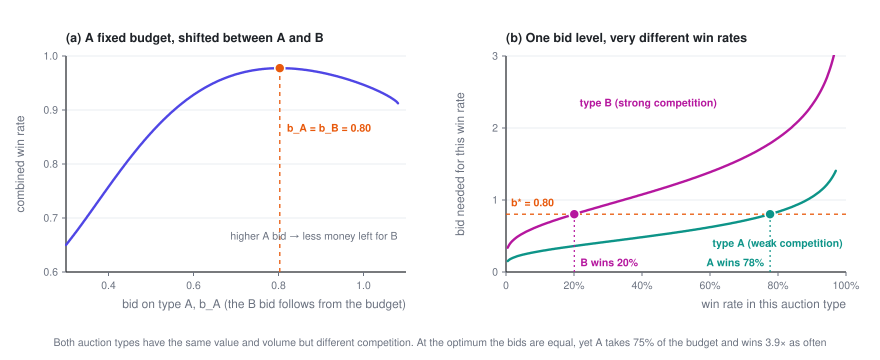
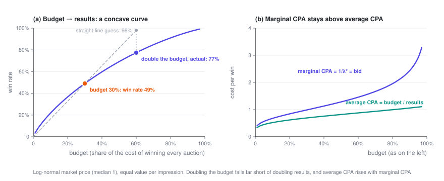

Bidding Under a Budget
There are thousands of auctions a day but only one budget. A Lagrange multiplier compresses that constraint into a single number \lambda, and every bid becomes "value ÷ \lambda". A few counterintuitive but very practical properties follow: equal values mean equal bids, and doubling the budget doesn't double the results.
Ad Bidding · Part 2 of 3 · 10 min read
← Bidding in a Single Auction · Series index · Budget Pacing →
Previously: Part 1 looked at a single auction. Under second price you bid your true value, b^\star = v, and the marginal cost of one more win is exactly your bid. This post adds a budget: many opportunities in a day, and only B to spend in total.
Symbols used in this post
| Symbol | Meaning |
|---|---|
| t = 1,\dots,T | The t-th auction (impression opportunity), T in total |
| v_t | What opportunity t is worth to you, e.g. this impression's pCVR |
| w_t(b),\ c_t(b) | Win-rate curve and expected spend of auction t; both can differ from auction to auction |
| B | Total budget |
| \lambda | Lagrange multiplier of the budget constraint, i.e. the shadow price |
| \alpha = 1/\lambda | Bid multiplier |
| V^\star(B) | The most total value you can get with budget B |
The full notation table is in the series index.
1. Setting up the problem
There are T auctions in a day. Auction t has value v_t, win-rate curve w_t(b) and expected spend c_t(b), and competition can be stronger or weaker from one auction to the next. You choose a bid for each one:
The objective counts value only; spend isn't subtracted. That matches the most common product setup: "here's my budget — get me as many conversions as you can". Advertisers often can't say exactly what a conversion is worth, but they always know their budget.
Show: another common way to write it — integrating over a distribution
Suppose every auction is drawn from the same distribution — say r is the impression's pCTR or pCVR, with distribution p(r) and value u(r), and the bid is a function of r, b(r). Dividing both the objective and the constraint by T gives the form common in ORTB-style papers (notation varies slightly):
There are two distributions here, so don't mix them up: p(r) is the distribution of your own value, while w comes from the distribution of the market price z. The derivation below works the same way for both forms.
2. Solving it
Step 1: attach the constraint to the objective with a multiplier.
Step 2: it splits apart. For a fixed \lambda, L is a sum of T terms, each involving just one b_t, so you can maximize each term separately:
The bracket is exactly Part 1's single-auction problem, except that the value v_t has become v_t/\lambda. Under second price, the answer is to bid that value:
Step 3: let the budget pin down \lambda. Total spend S(\lambda) = \sum_t c_t(v_t/\lambda) decreases monotonically in \lambda, so just bisect on \lambda until S(\lambda^\star) = B. Section 2 of the LinkedIn bidding paper (Gao et al., 2022) uses the same derivation.
Show: why this gives the optimum of the original problem (two lines, no convexity needed)
Suppose b^\star maximizes L for some \lambda \ge 0 and spends exactly the budget, \sum_t c_t(b_t^\star) = B. Take any set of bids b that stays within budget:
The first inequality uses \lambda \ge 0 and the budget constraint, the second uses the fact that b^\star maximizes L, and the final equality uses "spends exactly the budget". So no set of bids within budget can get more value than b^\star.
Nowhere does the argument rely on w_t or c_t being concave or convex. The term-by-term maximization uses Part 1's observation that the derivative is non-negative to the left of b = v_t/\lambda and non-positive to the right — again, no concavity required.
3. Properties of the solution
3.1 Bids are proportional to value, and a single number sets them all
The bids for millions of auctions collapse into a single scalar \alpha (usually called the bid multiplier, or pacing multiplier). A tight budget means a large \lambda, with every bid scaled down in proportion; a loose budget scales every bid up.
3.2 Equal values mean equal bids — even when competition is completely different
If every opportunity is worth the same (say you only count impressions or clicks), v_t \equiv v, then b_t^\star \equiv v/\lambda: you bid the same amount in every auction, whether competition is strong or weak, at 9 a.m. or at midnight.
That feels wrong at first: shouldn't you bid less where competition is weak and more where it's strong? Part 1's key fact clears it up. Under second price, the marginal cost of one more win equals your bid. Suppose your bid b_A in type-A auctions is higher than your bid b_B in type-B auctions. One more win in A costs b_A at the margin; in B it costs only b_B. Shift a little budget from A to B, and the same money buys more. As long as the two bids differ, you can keep doing this — you only stop once the bids are equal. Search advertising has a similar classic result: bidding the same amount on every keyword (uniform bidding) is a good strategy for maximizing clicks on a budget (Feldman et al., 2007).
When values differ, the same logic says: the marginal price per unit of value, b_t/v_t, is the same everywhere, and equals 1/\lambda. This is how the "leveling" from Part 3 of the pricing series shows up in bidding.

Look at panel (b): the same bid doesn't mean the same win rate, or the same spend. At the optimum, the weakly contested type A wins almost 4 times as often as type B and takes 75% of the budget. Differences in competition don't show up in the bids; they show up in where you win the most.
3.3 What \lambda means: how much more value one more dollar of budget buys
\lambda^\star is the budget's shadow price: the most extra value you can get from one more dollar of budget. Flip it around, and 1/\lambda^\star is the price of one more unit of value at the margin. When value is counted in conversions (v_t = pCVR), 1/\lambda^\star is your marginal CPA.
Show: deriving dV^\star/dB = \lambda^\star
When the budget goes from B to B + dB, each bid moves by some db_t. The change in total spend has to equal dB; using Part 1's c_t'(b) = b\,w_t'(b):
For the change in total value, substitute v_t = \lambda^\star b_t:
3.4 Diminishing returns: double the budget, but not the results
The bigger the budget, the smaller \lambda^\star, and the smaller dV^\star/dB. So V^\star(B) is a concave curve: marginal CPA rises steadily with the budget, and average CPA always stays below marginal CPA.
Under the simplest assumptions there's a closed form. Suppose every opportunity has the same value (v_t \equiv 1, so you simply count wins), market prices are uniform on [0, m], there are T auctions, and N is the number you win:
A few immediate consequences:
- Results grow with the square root of the budget: double the budget and you get only 41% more.
- Average CPA = B/N^\star = b^\star/2, while marginal CPA = dB/dN^\star = b^\star: the marginal cost is exactly twice the average.
- If market prices double across the board (m \to 2m), the same budget gets you only 1/\sqrt{2} of the results, and your bid goes up by a factor of \sqrt{2}.
Show: where the closed form comes from
All values are equal, so the bid is a constant b. Each auction's win rate is b/m, and its expected spend is b^2/(2m) (the uniform example from Part 1). Spend the whole budget:
The number of wins is N^\star = T\,b^\star/m, which works out to \sqrt{2TB/m}. Conversely, B = mN^2/(2T), so dB/dN = mN/T = b^\star.

The figure uses a more realistic log-normal market price: raising the budget from 30% to 60% lifts the win rate from 49% to 77% — not the 98% a straight-line extrapolation would suggest.
3.5 Several placements or campaigns sharing one budget: a single \lambda splits it for you
Nothing in the derivation required the T auctions to come from the same ad slot. They could come from two placements — say, the feed and off-site publishers — or from several campaigns in the same account. The conclusion is the same: bid everywhere with the same \lambda, and the marginal ROI of every placement and campaign equalizes on its own. The budget split comes out optimal without anyone dividing it by hand. Section 5 of the LinkedIn bidding paper (Gao et al., 2022) develops this point in full.
3.6 What about first price?
Each term becomes \max_b\ (v_t/\lambda)\,w_t(b) - b\,w_t(b), and Part 1's first-price formula gives:
Scale by \lambda first, then shade. The structure stays the same, with a single global \lambda. But 3.1 and 3.2 generally no longer hold: how much you shade depends on each auction's w_t, so bids stop being proportional to value. What really gets leveled is the marginal cost per unit of value: (b_t + w_t/w_t')/v_t = 1/\lambda. Under second price the marginal cost is the bid itself, which is why the leveling shows up directly as b_t/v_t.
4. Pitfalls in practice
- When the budget isn't binding, the formula says to bid infinitely high. The objective has no money in it, so if the budget can't all be spent, \lambda^\star = 0 — unspent budget is simply wasted. In practice, always pair it with a bid cap or a cost constraint (Part 3).
- Overpredicting pCVR across the board is harmless; overpredicting part of your traffic is not. Multiply every v_t by 1.3 and \lambda^\star also goes up by a factor of 1.3, leaving the bids exactly where they were. But if only one kind of traffic is overpredicted, \lambda can't absorb it, and budget gets misallocated toward that traffic.
- "We raised the budget and average CPA got worse" doesn't necessarily mean something is broken. As 3.4 shows, that's exactly what should happen. To judge whether things are healthy, look at marginal CPA — under second price it's simply bid ÷ pCVR — rather than only at average CPA.
Ad Bidding · Part 2 of 3
← Bidding in a Single Auction · Series index · Budget Pacing →